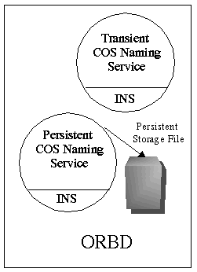

The Interoperable Naming Service (INS) is an extension to the CosNaming service. It provides the following additional features:
The following diagram shows how INS fits into ORBD:

An object reference contains at least three pieces of information: an address, the name of the POA that created an object reference, and an Object ID.
Using INS, you can provide an URL to access the CORBA object, which is more readable than a stringified Interoperable Object References (IOR). The following stringified object reference formats are allowed:
An IOR is an object reference that is understood by ORBs that can interoperate using the OMG-defined protocols General Inter-ORB Protocol (GIOP) and Internet Inter-ORB Protocol (IIOP). A client can obtain an object reference using orb.object_to_string(objRef), as shown in the Browsing the Namespace example, or as a result of an invocation on another object reference.
The corbaloc and corbaname formats enable you to provide a URL to access CORBA objects. Use the corbaloc format for resolving to a particular CORBAservice without going through a naming service. Use the corbaname format to resolve a stringified name from a specific naming context.
The corbaloc: format is used to locate CORBA services, is useful for CORBA client programs, and is typically used to resolve the reference using the GIOP LocateRequest or Request message. For example, a corbaloc: object reference might look like this:
corbaloc:iiop:1.2@example.com:2050/TraderService
This example show how to get an object reference for TraderService from host example.com on port 2050.
NOTE: The 1.2 in the example URL refers to GIOP version 1.2 for the IOR that corresponds to that corbaloc URL. GIOP 1.2 is the default value for Java CORBA ORB. It is shown in this example in order to demonstrate how you can plug in a different version.
The corbaname: format provides a mechanism for a client to bootstrap directly, and is typically used to resolve the stringified name from the root naming context. For example, a corbaname: object reference might look like this:
corbaname::example.com:2050#Personal/schedule
where example.com is the host, 2050 is the port. The portion of the reference up to the hash mark (corbaname::example.com:2050 ) is the URL that returns the root naming context. This example provides the URL to use to: a) locate the Naming Service, and, b) resolve the name Personal/schedule from the Naming Service.
The NamingContextExt interface, derived from NamingContext provides the operations required to use URLs and stringified names. Some of the APIs in NamingContextExt for converting between CosNames, Stringified Names, and URLs are listed below. See the COS Naming Specification, Section 3.6.4, for more information on these API.
This operation accepts a Name and returns a stringified name. If the Name is invalid, an InvalidName exception is raised.
This operation accepts a stringified name and returns a Name. If the stringified name is syntactically malformed or violates an implementation limit, an InvalidName exception is raised.
This is a convenience operation that performs a resolve in the same manner as NamingContext.resolve(). It accepts a stringified name as an argument instead of a Name.
This operation takes a corbaloc URL <address> and <key_string> component such as
for the first parameter, and a stringified name for the second. It then performs any escapes necessary on the parameters and returns a fully formed URL string. An exception is raised if either the corbaloc address and key parameter or name parameter are malformed.
It is legal for the stringified_name to be empty. If the address is empty, an InvalidAddress exception is raised.
Conversions from URLs to objects are handled by org.omg.CORBA.ORB.string_to_object() as described in the CORBA 2.3 Specification, Section 13.6.6.
The following Java IDL tutorials use NamingContextExt:
The ORB can be configured to return the handle of a customized CORBA service from resolve_initial_references() using either ORBInitRef and/or ORBDefaultInitRef. For example,
-ORBInitRef TraderService=corbaloc::example.com:2050/TraderService
-ORBDefaultInitRef corbaloc:iiop:1.2:example.com:2050
The order of resolution when these options are used is as follows:
For more information about INS, refer to the INS Naming Specification.
This document is a high-level overview of how to create a complete CORBA (Common Object Request Broker Architecture) application using the Interoperable Naming Service (INS).
This example makes use of the following files:
 Each step in the
tutorial is indicated by this symbol.
Each step in the
tutorial is indicated by this symbol.
Service.idl)The first step to creating a CORBA application is to specify all of your objects and their interfaces using the OMG's Interface Definition Language (IDL).
The following code is written in the OMG IDL, and describes a CORBA object whose ping() operation pings the INS Service.
Create the file
Service.idl and add the following code:
Service.idl
// A very simple interface to explain this example
interface Service {
void ping();
};
INSServer.java)The INSServer class has the server's main() method, which:
Create the file
INSServer.java and add the following code:
INSServer.java
// INSServer.java
// Copyright and License
import java.util.Properties;
import org.omg.CORBA.Object;
import org.omg.CORBA.ORB;
import org.omg.CORBA.Policy;
import org.omg.PortableServer.POA;
import org.omg.PortableServer.*;
import org.omg.PortableServer.Servant;
public class INSServer {
public static void main( String args[] ) {
try {
Properties properties = System.getProperties( );
// STEP 1: Set ORBPeristentServerPort property
// Set the proprietary property to open up a port to listen to
// INS requests.
// Note: This property is subject to change in future releases
properties.put( "com.sun.CORBA.POA.ORBPersistentServerPort",
Integer.toString(1060) );
// STEP 2: Instantiate the ORB, By passing in the
// ORBPersistentServerPort property set in the previous step
ORB orb = ORB.init( args, properties );
// STEP 3: Instantiate the Service Object that needs to be published
// and associate it with RootPOA.
ServiceImpl servant = new ServiceImpl( );
POA rootPOA = POAHelper.narrow( orb.resolve_initial_references( "RootPOA" ));
rootPOA.the_POAManager().activate();
rootPOA.activate_object( servant );
// STEP 4: Publish the INS Service using
// orb.register_initial_reference( <ObjectKey>, <ObjectReference>
// NOTE: Oracle Java private internal API, not part of CORBA 2.3.1.
// May move as our compliance with OMG standards evolves.
((com.sun.corba.se.internal.Interceptors.PIORB) orb).
register_initial_reference(
"PingService", rootPOA.servant_to_reference(servant) );
System.out.println( "INS Server is Ready..." );
// STEP 5: We are ready to receive requests
orb.run( );
} catch ( Exception e ) {
System.err.println( "Error in setup : " + e );
}
}
}
ServiceImpl.java)The example implementation, ServiceImpl, is the implementation of the Service IDL interface.
Create the file
ServiceImpl.java and add the following code:
ServiceImpl.java
// ServiceImpl.java
// Copyright and License
// Implementation of Service interface
public class ServiceImpl extends ServicePOA {
public void ping( ) {
System.out.println( "PingService.ping called..." );
}
}
INSClient.java)The example application client that follows:
Create the file
INSClient.java and add the following code:
INSClient.java
// INSClient.java
// Copyright and License
import org.omg.CORBA.ORB;
public class INSClient {
public static void main( String args[] ) {
try {
// STEP 1: Instantiate the ORB
ORB orb = ORB.init( args, null );
// STEP 2: Resolve PingService using orb.resolve_initial_references()
// In this example we have used -ORBInitRef argument to locate the
// PingService. User can also choose to pass the corbaloc: url to
// orb.string_to_object to resolve the published PingService
// reference.
org.omg.CORBA.Object object = orb.resolve_initial_references(
"PingService" );
// STEP 3: Narrow the reference and we are ready to invoke method
// on PingService.
Service insService = ServiceHelper.narrow( object );
insService.ping( );
System.out.println( "The server has been pinged" );
} catch ( Exception e ) {
System.err.println( "Exception in INSClient " + e );
e.printStackTrace( );
}
}
}
When running this example, we recommend that you use a port number greater than or equal to 1024. This is because you must become root to start a process on a port under 1024 when using Solaris software. The ORBPersistentServerPort property of the server has been set to 1060 in this example.
Change to the
directory that contains the file Service.idl, and run the
IDL-to-Java compiler as shown below:
idlj -fall Service.idl
You must use the -fall option with the idlj compiler to generate both client and server-side bindings. For more information on the idlj options, see the man page for idlj (Solaris, Linux, or Mac OS X or Windows).
The files generated by the idlj compiler for Service.idl, with the -fall command line option, are:
Compile the
.java files, including the stubs and skeletons, as
follows:
javac *.java
Start the INS
server:
java -classpath . INSServer
If the INS Server is running correctly, the following message will display:
INS Server is Ready...
Open another
terminal window or DOS shell and run the client application:
java -classpath . INSClient -ORBInitRef
PingService=corbaloc:iiop:1.2@localhost:1060/PingService
When the client is run with the -ORBInitRef option, it will be able to locate PingService. The following message displays in the client window:
The server has been pinged
And the following message displays in the server window:
PingService.ping called...
When you have finished this tutorial, be sure to shut down or kill the INS server. To do this from a DOS prompt, select the window that is running the server and enter Ctrl+C to shut it down. To do this from a shell on Solaris, Linux, or Mac OS X, open the shell that was running the client and type pkill INSServer.